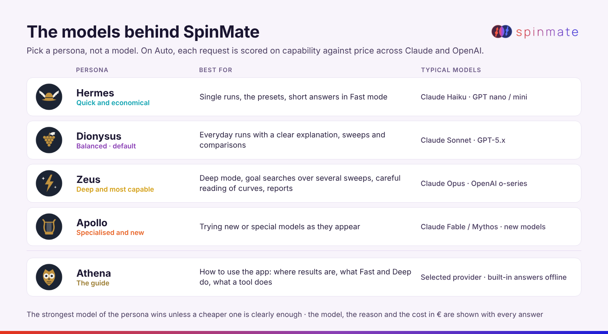

User Guide
An AI agent for spintronics simulation. Describe a setup in plain language or upload a parameter file; SpinMate validates it, runs the two-sublattice macrospin model and explains the result from the actual magnetization dynamics.
An AI agent for spintronics simulation. Describe a setup in plain language or upload a parameter file; SpinMate validates it, runs the two-sublattice macrospin model and explains the result from the actual magnetization dynamics.
docker compose up -d, then open http://localhost:8421.
On Windows you can also run SpinMate.exe, which opens the app in your browser..env is used by the server for everyone on it.Describe the starting state, the exchange, any field, current or temperature, and the duration. Units follow the solver (SI; currents in A/cm²). Examples:
SpinMate checks the parameters with the solver's own parser before anything runs. A suspicious value (for example
A0 = 0.248 without the e-12) is pointed out instead of being run. Large requests
(many runs or long runtimes) wait for your Run it button.

| Field | Meaning |
|---|---|
| order | Initial and final order from m₁·m₂: AFM below −0.9, FM above +0.9. |
| m₁, m₂ final, Néel vector | Final unit vectors and n = (m₁ − m₂)/2. |
| nz switches | Real reversals of nz (from below −0.5 to above +0.5 or back), with the time of the first one. Ringing around zero is not counted. |
| settled after | When m₁ and m₂ stop changing (within 2 %). “–” if they did not settle in the run. |
| dominant f | Main frequency of m₁ₓ, given only if at least five periods fit in the second half of the run. |
The sphere shows the trajectories of m₁ (blue) and m₂ (magenta) in 3D, or as an x–z dial. The chart shows m₁, m₂, z-components only, or the Néel vector; drag to zoom, double-click to reset, click to move the playhead. Play animates the run. The card also links the raw files, CSV export and a zip of all data.
Fast uses the default parameters, changes only what you name and answers in a few lines. Deep works from the full parameter set or your file, mentions the caveats that apply and gives a quantitative explanation. Both end with up to three suggested next steps as buttons.
Under the message box you pick a persona, not a model. On Auto each request is scored on capability against price across your Claude and OpenAI keys; the strongest model of the persona wins unless a cheaper one is clearly enough. Every answer shows the model, the reason and the cost in €. To always use one model, pick it in Settings → Model behind each god.

The list icon in the left bar opens every run: search by id, label, #tag or parameter, filter by status and end state, star and tag runs, select several to compare, plot or report, or delete them. With the run catalog enabled, the assistant answers questions across runs with one read-only SQL query:
| Parameter | Meaning | Example |
|---|---|---|
--t | Duration (s) | --t=5e-11 |
--A0 | Inter-sublattice exchange (J/m); negative = AFM coupling | --A0=-0.248e-12 |
--m1, --m2 | Initial unit vectors | --m1=0.25,0.0,0.968 |
--SOT_DC_Amp | DC spin-orbit current (A/cm²) | --SOT_DC_Amp=1e8 |
--flagTempVarying, --Temp, --Fr | FeRh temperature cycle: on/off, amplitude (K), frequency (Hz) | --Temp=60 --Fr=0.25e9 |
A parameter file is plain text with one --name=value per line; attach it with the paper clip. Ask Athena
or the assistant “Which parameters can I set?” for the full list with units.
--t=2e-9 --A0=-0.248e-12 --m1=0.25,0.0,0.968 --m2=0.35,0.0,0.937
| Symptom | What to do |
|---|---|
| “Add an API key” | Paste a key in Settings, or set it in .env and restart. |
| No answer, 401/429 errors | Check the key and the credit of the provider; on Auto the next model by score is tried. |
| Page does not open from another computer | By design the app listens on this computer only (BIND_ADDRESS=127.0.0.1). |
| Behind a corporate proxy | Put the company CA bundle in ./certs and set SSL_CERT_FILE (see README). |
| Microphone not listed | Allow the microphone in the browser once; open the app on localhost or https. |
More in the README on GitHub. Feedback and issues are welcome.